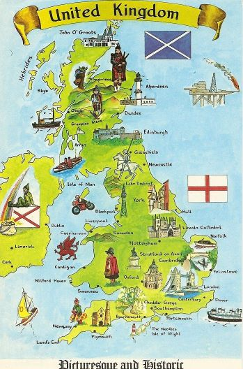
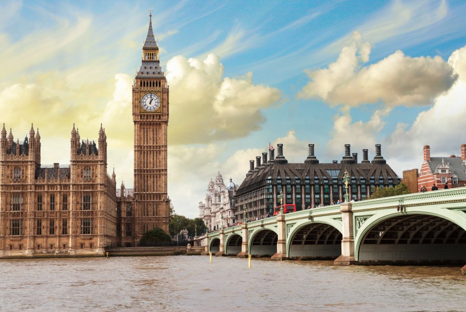
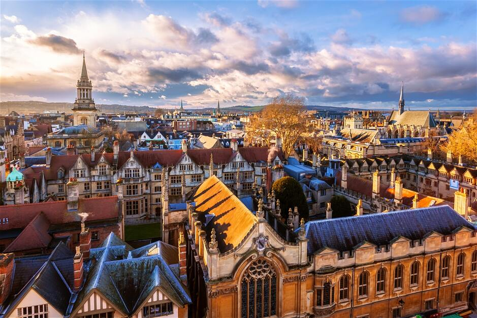

Велика Британія – країна з багатою історичною й культурною спадщиною, давніми традиціями й
гостинними жителями.
Країна, де люди і сьогодні люблять свого монарха, країна, де дбайливо шанують традиції предків,
країна з чудовими пейзажами,
які немов зійшли зі сторінок старовинних казок і легенд
Країни, що входять в неї: Англія, Північна Ірландія, Шотландія та Уельс
Офіційна мова у Великій Британії - англійська мова, яка станом на сьогодні
використовується мільйонами людей по всій Землі
Велика Британія, а саме Англія є найбільш дощовою аристократичною країною
Попри те, що ця країна характеризується часто-густими опадами, слова Девіда Віскотта
"To love and be loved is to feel the sun from both sides"
яскраво характеризують цю країну
Побувати в цій дивовижній країні хоча б раз в житті варто того! Тому не відкладуйте свої мрії в
довгий ящик!
Натомість, як сказано у відомій крилатій фразі, "Dream until your dreams come true!"
А ми допоможемо втілити Ваші мрії! Замовити путівку для подорожі цією чудовою країною можна у відповідній
вкладці нашого сайту!

Велика Британія на карті
Лондон
eng."City of London"
Столиця Англії

William Blake, 'London'
Ne’er saw I, never felt, a calm so deep! The river glideth at his own sweet will: Dear God! the
very houses seem asleep; And all that mighty heart is lying still!
Цікаві факти про місто
Знаменита лондонська вежа - звичайно ж, «Біг Бен»
«Елізабет», всуперед поширеному міфу. «Біг Беном»
називається встановлена там дзвіниця, а сама вежа носить назву «Елізабет»
В одному з музеїв Лондона зберігається колекція речей, забутих пасажирами в лондонському
метро. Вона містить такі екстравагантні речі, як людський череп, самурайський меч, труну і
рибу фугу
Аеропорт Хітроу в Лондоні приймає і відправляє міжнародних рейсів більше,
ніж будь-який інший аеропорт світу
Всупереч поширеній думці, Лондон – місто зовсім не дощове місто. Навпаки, він один із
найсухіших у Європі. А ось похмурих днів тут дійсно багато
Від Лондона до Парижа можна дістатися поїздом усього за дві години
А взагалі, Лондон — це місто суперечностей. У ньому є чарівність старого світу та історія, але в
ньому також є сучасна, модна та гостра сторона
Оксфорд
eng."Oxford city"

Оксфорд - англійське місто, розташоване за 90 кілометрів на північний захід
від Лондона.
Це місто-графство і єдине місто в графстві Оксфордшир. У 2020 році населення Оксфорда оцінювалося в
151 584 особи,
і щороку місто відвідують близько 7 мільйонів людей, що робить Оксфорд 7-м
найбільш
відвідуваним містом у Сполученому Королівстві
Цікаві факти про місто
Раніше місто називалося Форд фор Оксен ('брід для биків' через Темзу)
Одне з улюблених занять в Оксфорді - катання на човнах, керованих жердиною
Університет в місті Оксфорд в графстві Оксфордшир в Великобританії
найстаріший в
світі англомовний університет, перший університет у Великобританії
Понад 20 тисяч студентів навчається в Оксфорді, чверть з них - іноземці
Історія знаменитого оксфордського університету цікаво та повчально
описана в книзі The University of Oxford: A History
автора L. W. B. Brockliss